Telwoorden
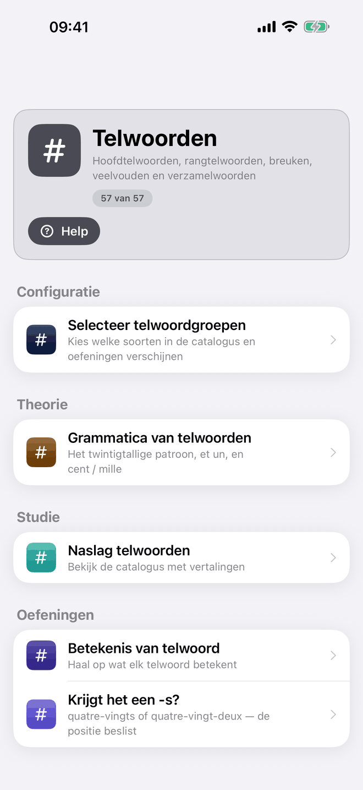
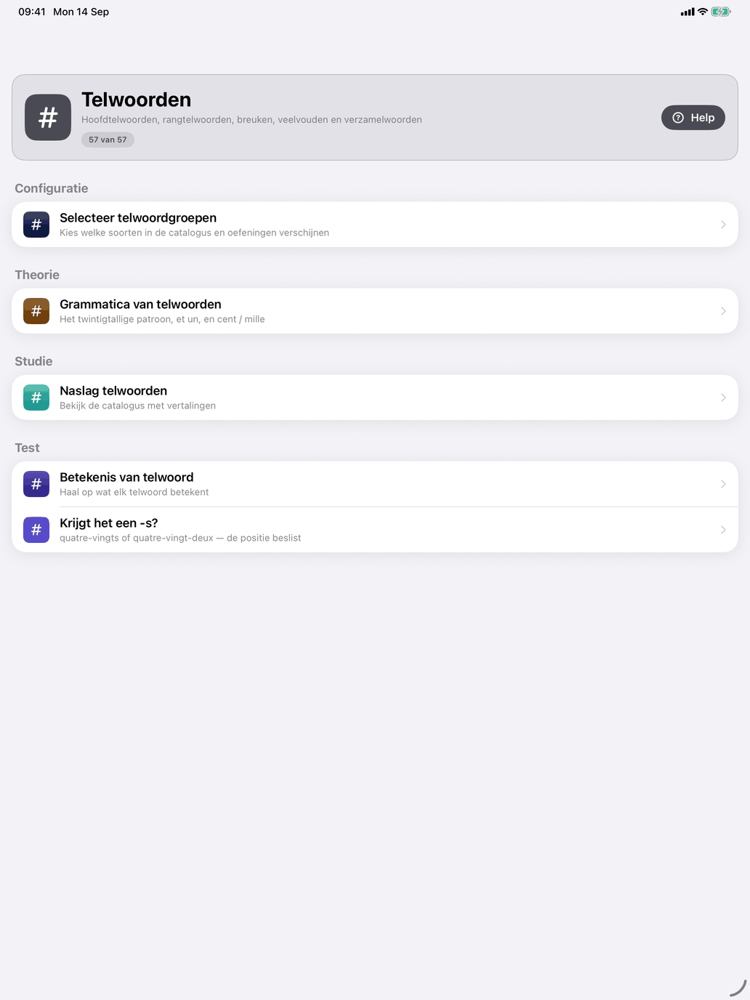
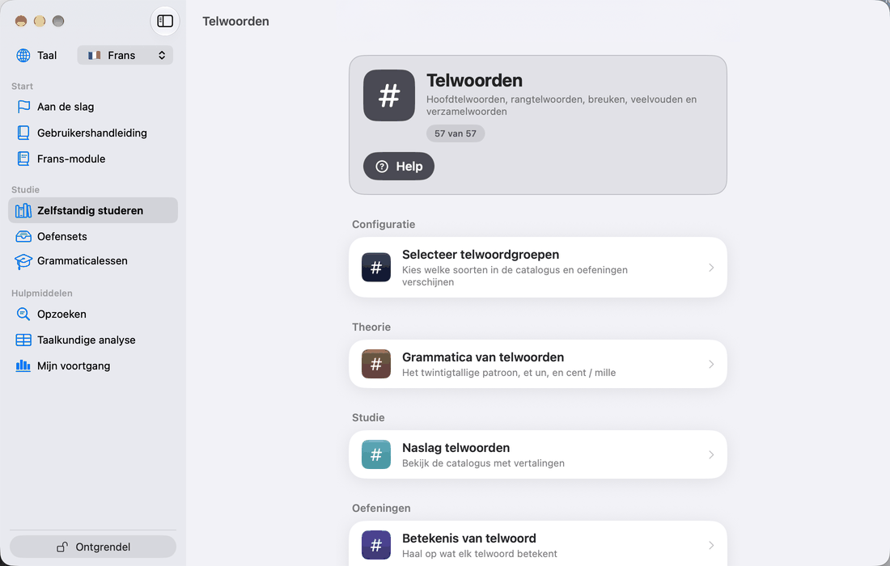
De hub Telwoorden behandelt vijf soorten Franse telwoorden — hoofdtelwoorden, rangtelwoorden, breuktelwoorden, vermenigvuldigingstelwoorden en verzameltelwoorden — met bijzondere aandacht voor de getallen van 70 tot 99 en voor de regels van de meervouds-s.
Open Zelfstandig studeren → Telwoorden. De hub bevat:
- Theorie — Grammatica van telwoorden: het telsysteem van 1 tot 1000.
- Studie — Naslag (Naslag telwoorden): de geselecteerde telwoorden met hun vertaling.
- Oefenen — Selecteer groepen (Selecteer telwoordgroepen): kies welke soorten aan bod komen. Daarna de oefeningen:
- Betekenis (Betekenis van telwoord) — flashcards voor de betekenis van de geselecteerde telwoorden.
- Krijgt het een -s? — quatre-vingts of quatre-vingt-deux: de positie beslist.
De regel onder de titel van de hub toont hoeveel telwoorden je selectie van soorten oplevert, van de hele catalogus. Alleen de soorten die je aanvinkt bepalen de selectie: je niveau bepaalt of de hub verschijnt, niet welke telwoorden erin staan, en de onderwerpen in Woordbereik selecteren gelden hier niet.
Een aanbevolen werkwijze
- Vink alleen Cardinal aan en doe Betekenis. Let vooral op soixante-dix, quatre-vingts en quatre-vingt-dix.
- Gebruik Krijgt het een -s? om de spellingregels in te slijpen.
- Voeg de andere soorten toe.
Selecteer telwoordgroepen
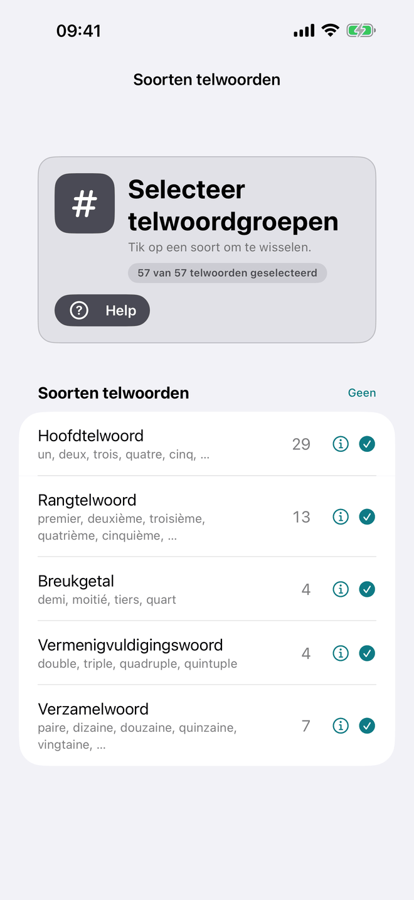
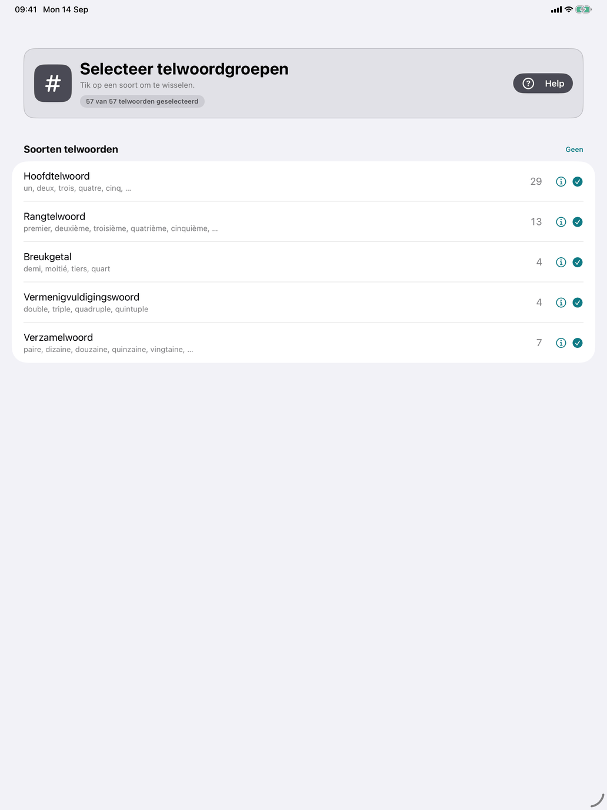
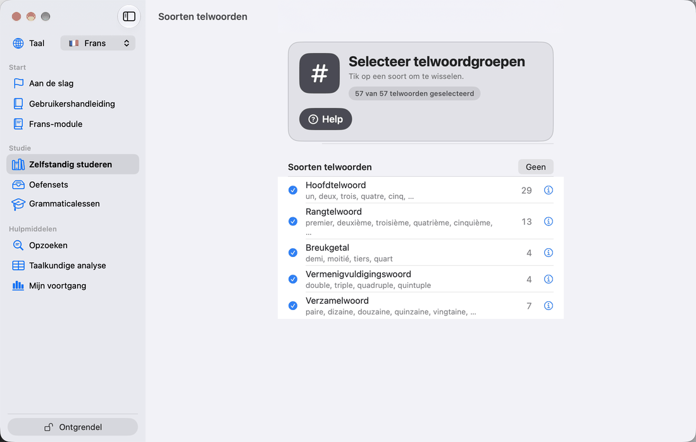
De vijf soorten:
- Cardinal — de teltallen: un, deux, trois … vingt, trente … soixante-dix, quatre-vingts, quatre-vingt-dix, cent, mille.
- Ordinal — premier, deuxième, troisième … vingtième, centième, millième.
- Fractional — demi, moitié, tiers, quart.
- Multiplicative — double, triple, quadruple, quintuple.
- Collectief — paire, dizaine, douzaine, quinzaine, vingtaine, centaine, millier.
Tik op een soort om die aan of uit te zetten; elke rij toont hoeveel telwoorden erin zitten en de eerste paar ervan. Tik op ⓘ voor uitleg over de soort en de telwoorden:
- Rangtelwoorden voegen -ième toe aan het hoofdtelwoord, waarbij een slot--e wegvalt (quatre → quatrième), met twee spellingwijzigingen: cinq → cinquième, neuf → neuvième. Alleen premier / première en second / seconde richten zich naar het geslacht.
- Breuktelwoorden: demi verandert niet vóór het zelfstandig naamwoord en krijgt een koppelteken (une demi-heure), maar richt zich er wel naar als het erachter staat (une heure et demie). La moitié is het zelfstandig naamwoord voor de helft van iets. Vanaf een vijfde gebruik je het rangtelwoord: un cinquième.
- Vermenigvuldigingstelwoorden zijn bijvoeglijke naamwoorden (un double espresso) en zelfstandige naamwoorden (le double de).
- Verzameltelwoorden zijn zelfstandige naamwoorden — vrouwelijk, behalve millier — en krijgen de: une douzaine d'œufs. Behalve douzaine en paire betekenen ze "ongeveer": une vingtaine de personnes zijn een stuk of twintig mensen.
Grammatica van telwoorden
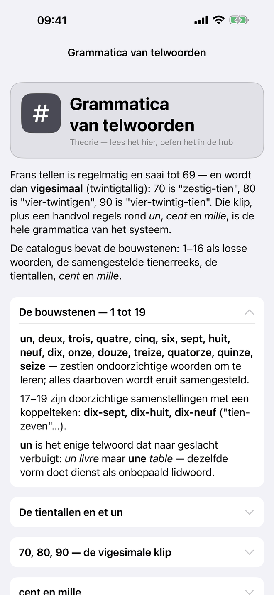
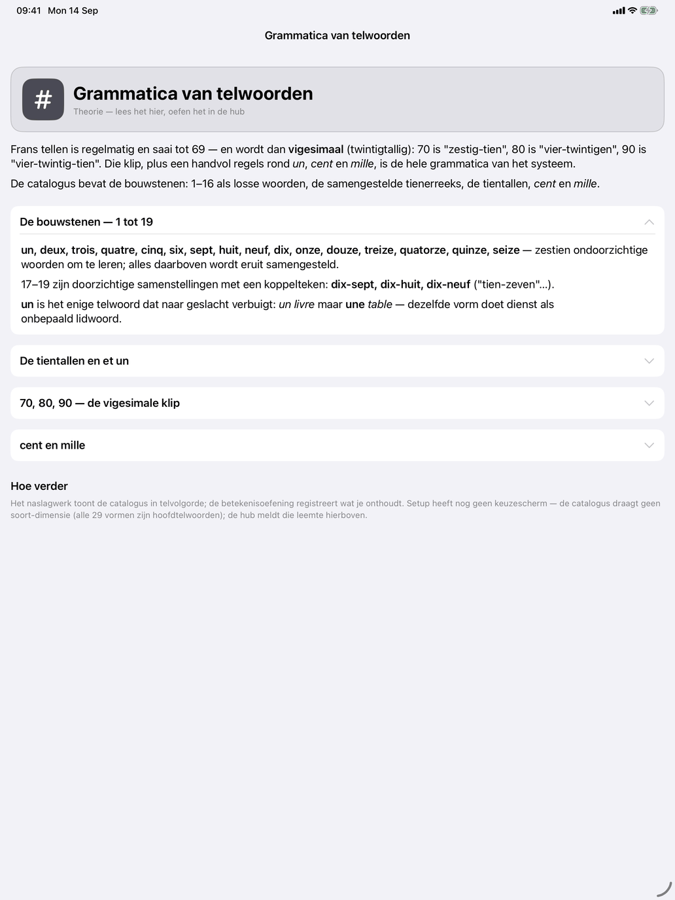
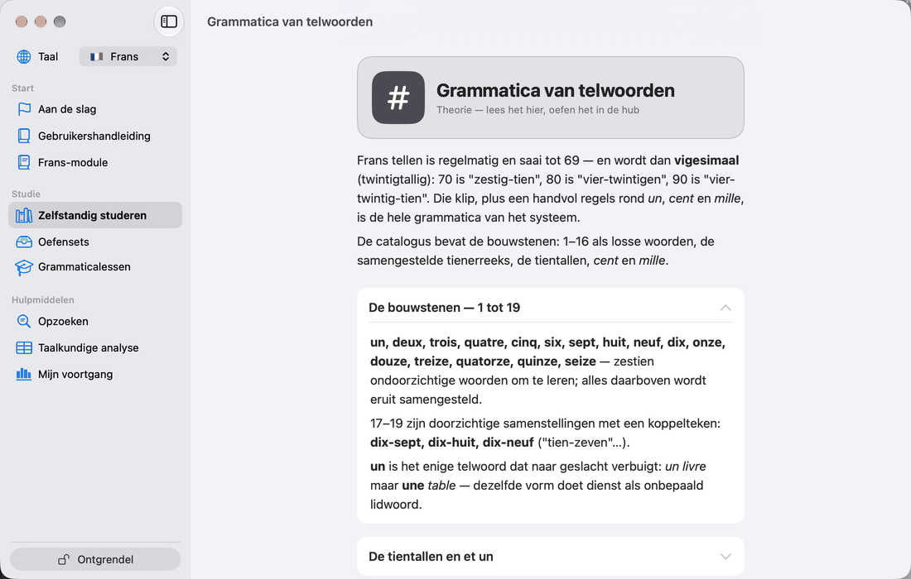
Een naslagpagina over de hoofdtelwoorden; er wordt niets vastgelegd.
1 tot 19. Un, deux, trois, quatre, cinq, six, sept, huit, neuf, dix, onze, douze, treize, quatorze, quinze, seize zijn zestien woorden die je uit het hoofd leert. 17 tot 19 zijn samenstellingen met een koppelteken: dix-sept, dix-huit, dix-neuf. Un is het enige getal dat zich naar het geslacht richt: un livre, une table.
De tientallen. Vingt, trente, quarante, cinquante, soixante. Eenheden worden met een koppelteken verbonden (vingt-deux, trente-cinq), behalve de 1, die et krijgt: vingt et un, trente et un … soixante et un.
70, 80, 90. Boven de 69 telt het Frans in twintigtallen:
- soixante-dix = 60 + 10 → 70, verder met soixante et onze (71), soixante-douze (72) … soixante-dix-neuf (79).
- quatre-vingts = 4 × 20 → 80. De -s valt weg als er nog een getal volgt: quatre-vingt-un (81) — zonder et.
- quatre-vingt-dix = 4 × 20 + 10 → 90, verder met quatre-vingt-onze (91) … quatre-vingt-dix-neuf (99).
België en Zwitserland gebruiken septante (70) en nonante (90), en delen van Zwitserland huitante (80). Het is goed om ze te herkennen, maar de app leert de vormen die in Frankrijk gebruikt worden.
Cent en mille. Cent (100) en mille (1000) staan zonder un: cent euros. Cent krijgt een -s bij ronde honderdtallen (deux cents), maar niet als er een getal volgt (deux cent un). Mille verandert nooit: deux mille.
Naslag telwoorden
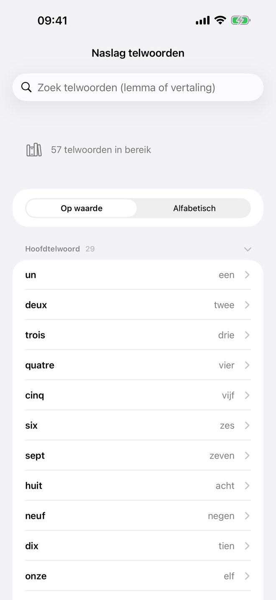
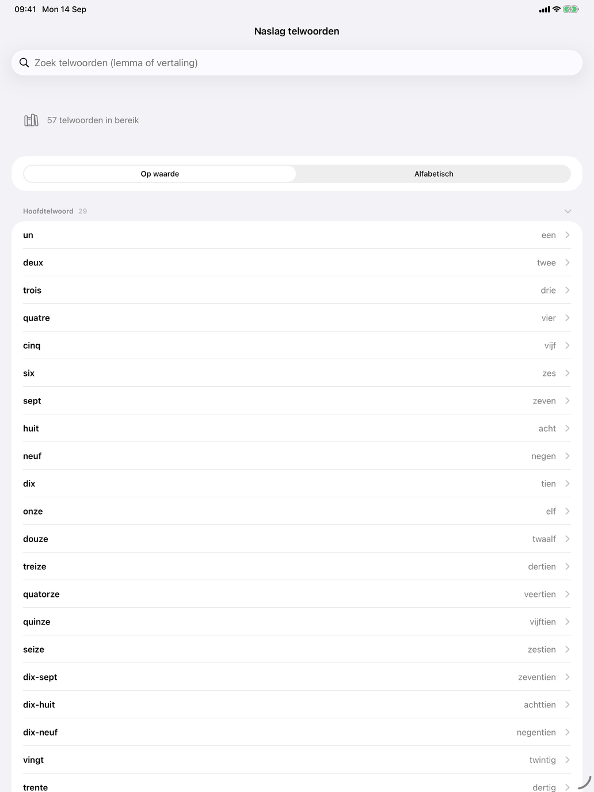
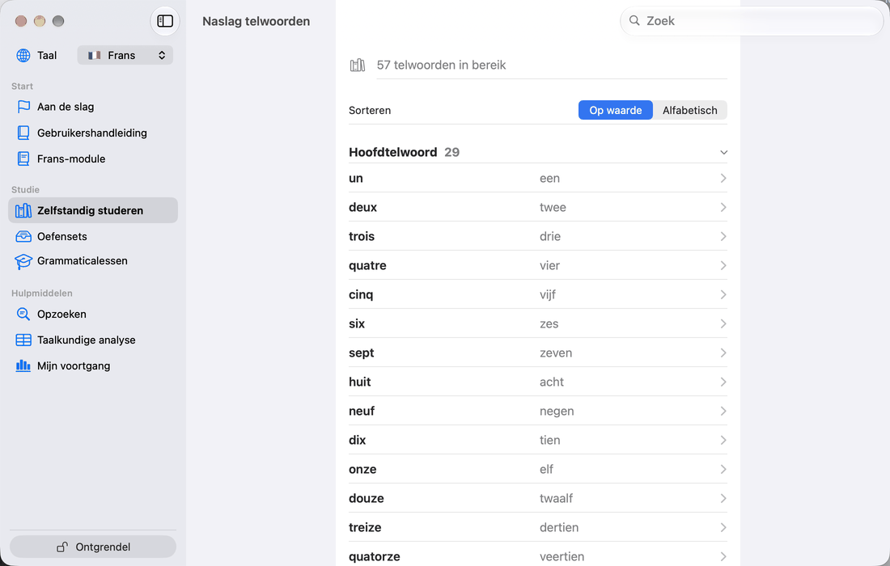
Een lijst om door te bladeren met de geselecteerde telwoorden en hun vertaling, in secties per soort, met een zoekveld. Je kunt een telwoord ook op zijn waarde zoeken (80). Met de schakelaar Op waarde / Alfabetisch bovenaan wijzig je de volgorde. Er wordt niets vastgelegd.
Tik op een telwoord om de pagina ervan te openen:
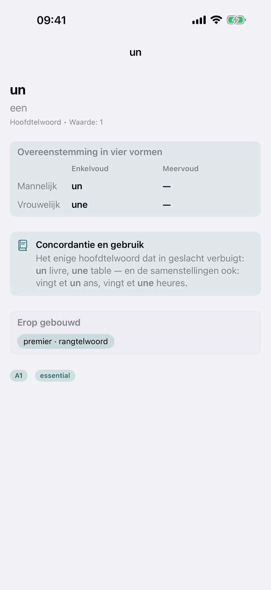
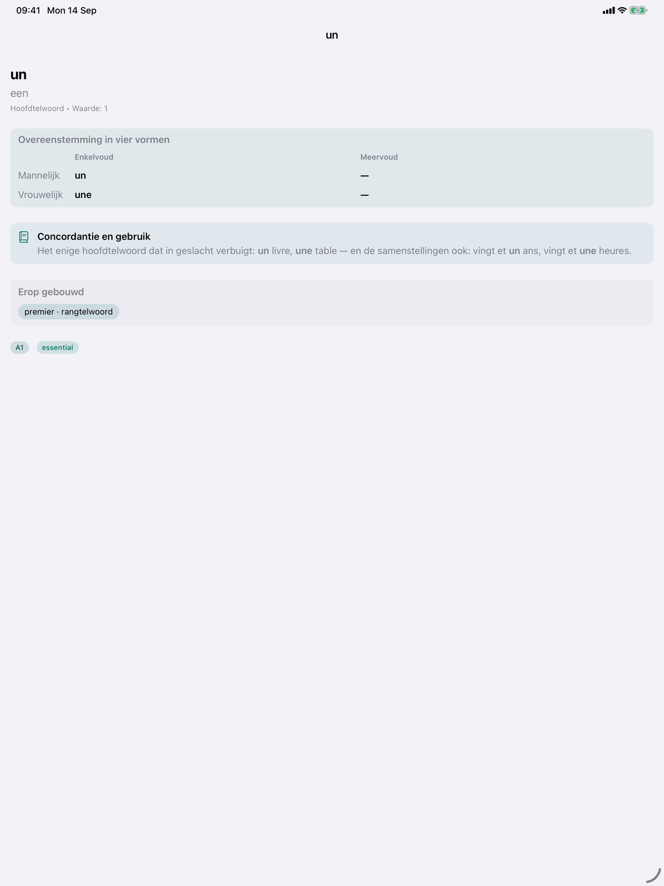
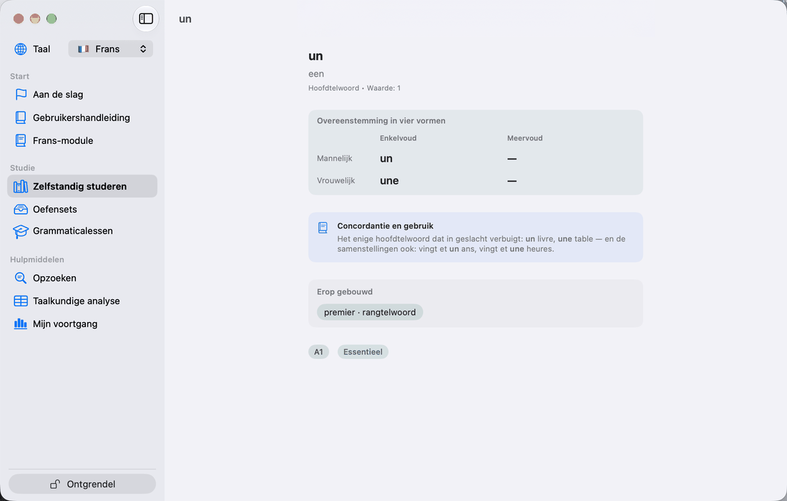
- het telwoord en de vertaling, met de soort en de waarde (Waarde: 80; een breuk wordt getoond als 1/4, een veelvoud als ×3)
- bij sommige telwoorden een opmerking onder Concordantie en gebruik — bijvoorbeeld dat vingt alleen een -s krijgt als het vermenigvuldigd wordt en achteraan staat
- Gebouwd op, Erop gebouwd of Zelfde familie: chips die een rangtelwoord, breuk of verzameltelwoord aan het hoofdtelwoord koppelen, en omgekeerd. Tik op een chip om dat telwoord te openen.
- het niveau en de frequentie
Betekenis van telwoord
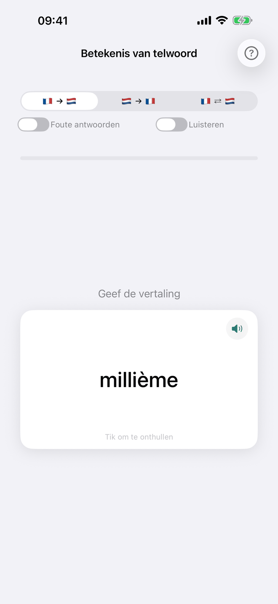
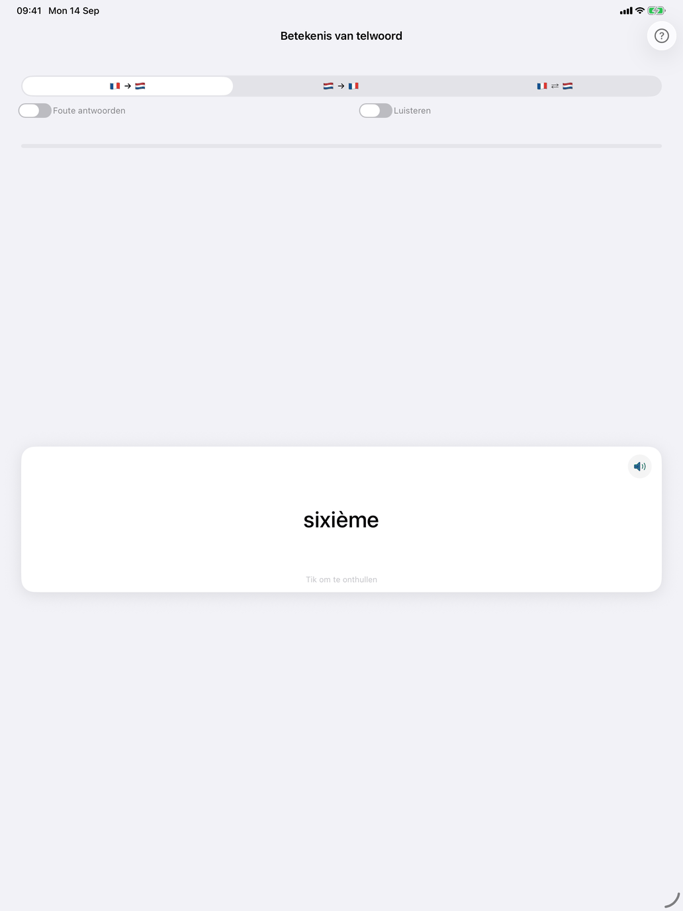
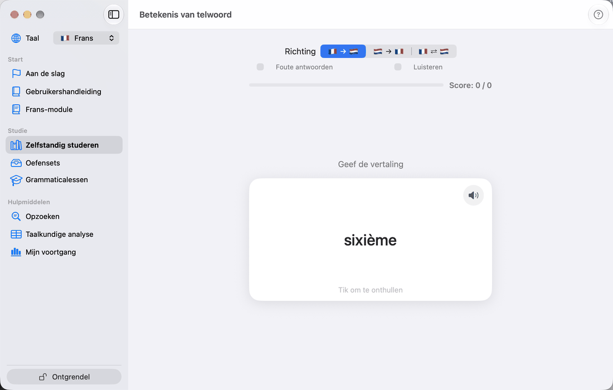
Een stapel flashcards voor de betekenis van de geselecteerde telwoorden, in beide richtingen. Werkt net als Betekenis zelfstandige naamwoorden. Elk antwoord wordt vastgelegd.
Krijgt het een -s?
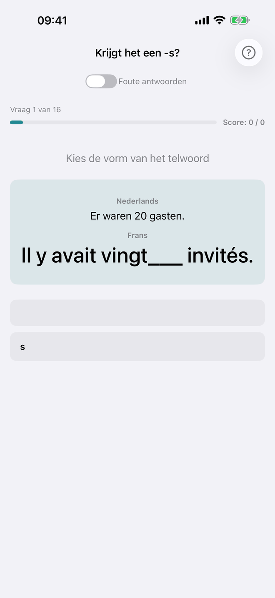
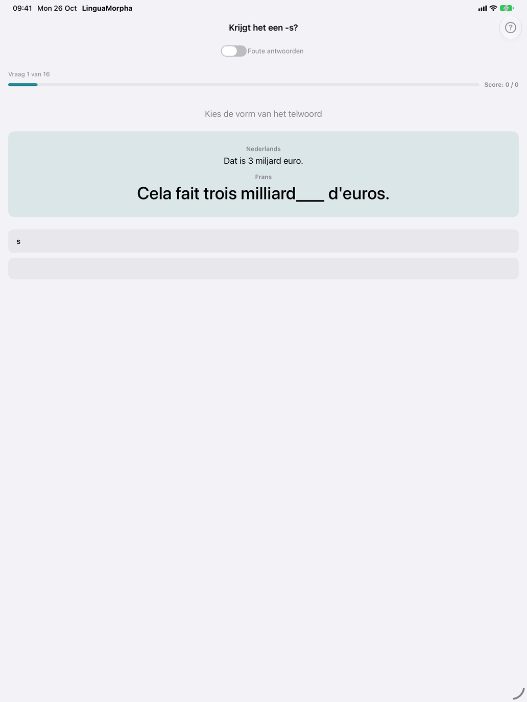
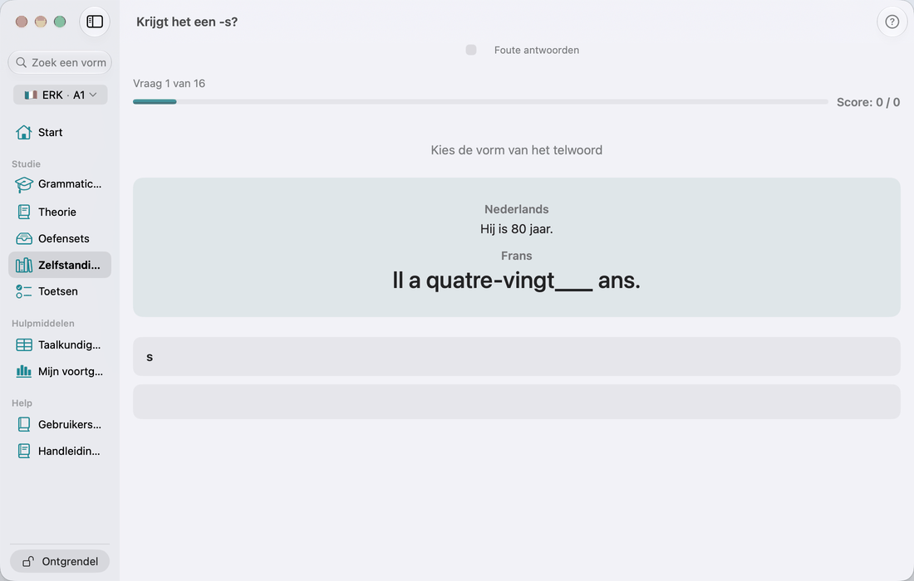
Elke vraag toont een Engelse zin met het getal in cijfers en een label met de naam van de regel, plus de Franse zin met een open plek aan het eind van het telwoord: Il a quatre-vingt___ ans. ("Hij is 80 jaar oud.") Tik op de uitgang — meestal s of de lege optie voor geen uitgang. De open plek wordt ingevuld, het juiste antwoord wordt gemarkeerd en een kaart legt de regel uit. Tik op Volgende om verder te gaan.
De zinnen komen in paren, omdat elke regel pas zichtbaar wordt naast zijn tegendeel:
- Multiplied and final — vingt en cent krijgen -s: quatre-vingts ans, deux cents euros.
- Followed by another — er volgt nog een getal, dus de -s valt weg: quatre-vingt-deux ans, deux cent cinq euros.
- Not multiplied — een losse cent of vingt heeft geen -s: cent ans, vingt invités.
- Onveranderlijk — mille verandert nooit: deux mille euros.
- Counter noun — million en milliard zijn zelfstandige naamwoorden: ze krijgen -s en worden gevolgd door de: deux millions d'habitants.
- Geslacht — un richt zich naar het zelfstandig naamwoord, ook binnen een samenstelling: vingt et une pages, trente et un jours.
De oefening heeft een eigen vaste set zinnen en negeert je selectie van soorten. Antwoorden worden per regel vastgelegd.